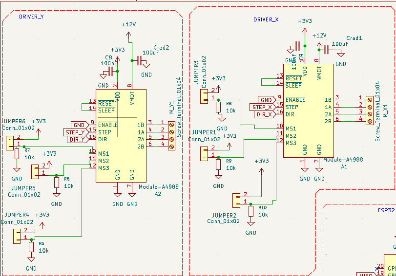

Choix technique électrique

Conception sous KiCad
La carte a été conçue sous KiCad en séparant clairement les fonctions en blocs : alimentation 12 V/5 V/3,3 V, commande moteurs pas à pas (2× A4988), pilotage servo, microcontrôleur ESP32‑S3, interface utilisateur (boutons, LED, OLED I²C) et stockage sur carte SD.
Les alimentations sont structurées autour d'une entrée 12 V protégée par fusible et interrupteur, puis d'un convertisseur 12 V→5 V (module RE‑78) suivi de la distribution 5 V vers le servo. Des condensateurs électrolytiques de forte capacité sont placés près des drivers, complétés par des céramiques de 100 nF au plus près des broches d'alimentation des CI, afin de filtrer les pointes de courant.
Les fins de course sont câblées en tout ou rien avec des résistances de tirage vers 3,3 V pour garantir des états logiques stables. L'interface I²C (OLED) et le lecteur de carte SD sont rattachés à l'ESP32‑S3 sur des GPIO sélectionnés pour éviter les broches critiques.

Les deux drivers A4988 sont intégrés avec leurs signaux STEP/DIR reliés à l'ESP32‑S3 via des GPIO dédiées, et leurs broches de configuration (MS1–MS3, ENABLE, RESET/SLEEP) sont polarisées par des résistances de pull‑up/pull‑down de 10 kΩ et des cavaliers, ce qui impose des états par défaut au démarrage tout en permettant de modifier le micro‑pas ou l'activation par simple changement de jumper.
Le bus I²C comporte des résistances de pull‑up de 4,7 kΩ vers 3,3 V, valeur choisie comme compromis entre courant de ligne et rapidité des fronts. Les LED d'état sont polarisées et permettent de vérifier l'arrivée du courant.

Routage PCB
Le routage a été réalisé sur un PCB double face en définissant des classes de nets distinctes pour la puissance et les signaux. Les pistes logiques (GPIO, I²C, SD, signaux STEP/DIR) sont routées avec une largeur standard de l'ordre de 0.6 mm, suffisante pour des courants de quelques mA.
Les pistes d'alimentation 12 V et les retours de masse associés aux drivers moteurs ont été élargis à 1.5 mm pour les segments unitaires et davantage pour le tronc principal. Ce choix est basé sur une estimation de courant maximal d'environ 3 A à 3,5 A pour l'ensemble de la machine.
Un plan de masse a été implémenté sur chaque couche, connecté à toutes les références GND. Ce plan offre un chemin de retour à faible impédance sous les pistes de signaux et réduit la surface des boucles de courant.
L'implantation des composants a été pensée pour limiter les longueurs de pistes de puissance : les drivers sont placés à proximité immédiate des connecteurs moteurs et des condensateurs 12 V, alors que l'ESP32‑S3 est positionné de façon centrale.
Les interfaces (boutons, OLED, SD) sont en bord de carte pour faciliter le câblage sur la machine. Cette organisation réduit les interférences entre puissance et signaux faibles et simplifie le débogage.